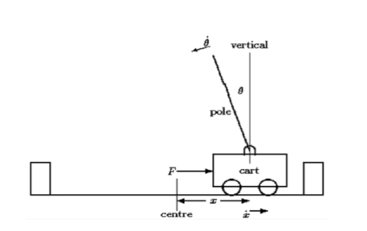
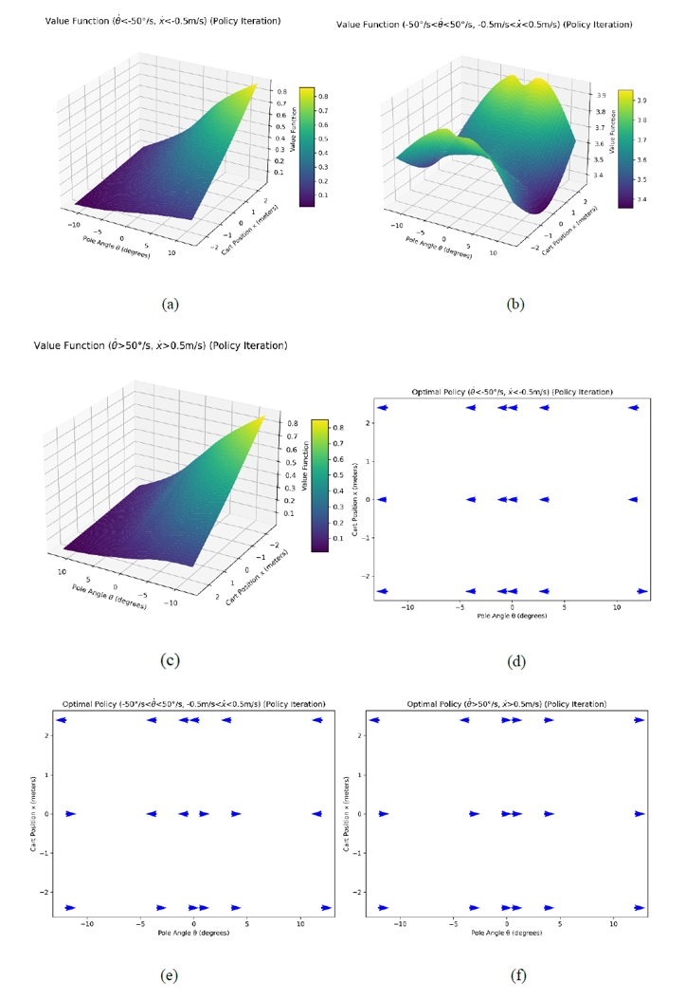
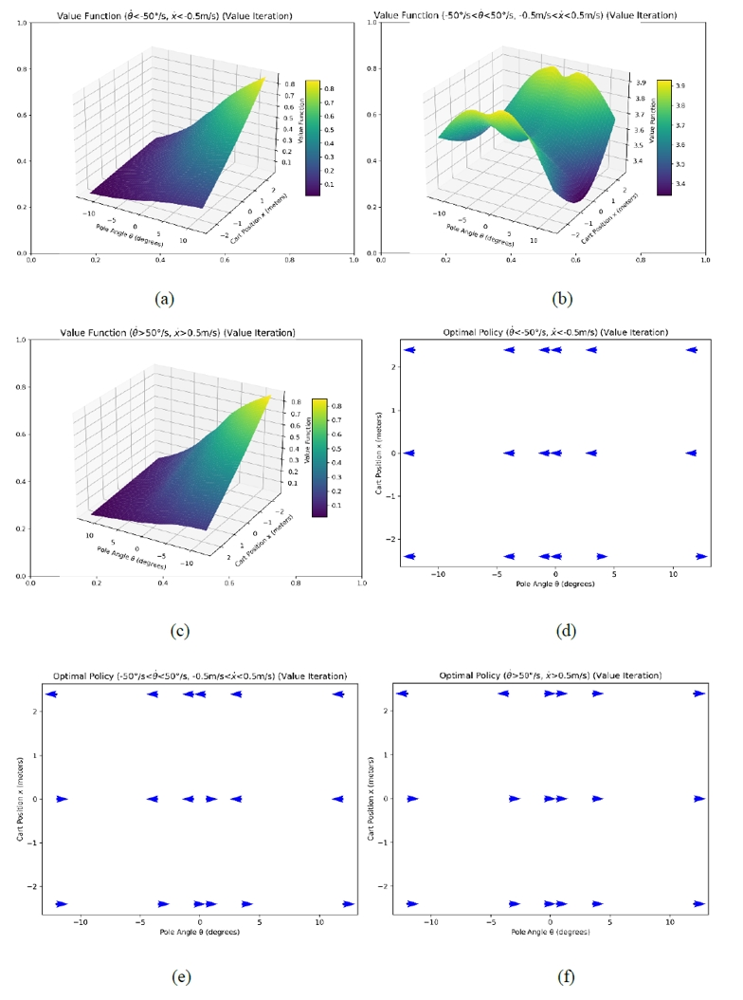

Reinforcement Learning for Cart-Pole Control
Course: Statistical Learning for Engineers (Machine Learning)
Instructor: Jin Seob Kim
This project explores the application of reinforcement learning techniques to solve the classic cart-pole problem, a benchmark control challenge involving a 2D inverted pendulum. The objective is to balance a pole on a moving cart by applying forces to the cart, ensuring stability despite dynamic and nonlinear system behavior.

Key methods such as Policy Iteration and Value Iteration were applied to derive optimal policies and value functions. By discretizing the state space into 162 regions and employing Euler's method for dynamic modeling, transition probabilities were computed systematically.
The results highlight the alignment of optimal policies with physical intuition. Distinct patterns in the value functions reflect safe and efficient control strategies under varying conditions of angular and linear velocities. These findings underscore the effectiveness of dynamic programming in solving control problems.

